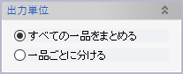

配管サポート一品図
配管サポート一品要素を選択して一品図を作成します。コマンドを実行すると新規図面ドキュメントが作成され、そのドキュメント上でサポート一品ひとつにつきひとつの図面シートが作成されます。
一品図を作成するためにはあらかじめテンプレートファイルを用意しておく必要があります（Evo.Shipにサンプルが付属します）。
操作方法
一品図を作成したい配管サポート一品要素を選択し、投影図や派生図の向きと図面のテンプレートファイルを指定してOKボタンをクリックすると図面が作成されます。
パラメータ
対象配管サポート一品

「選択」ボタンをクリックすると配管サポート一品選択ウィンドウが表示されるので、ツリーから一品要素を選択してください。一品図作成の対象となるサポート一品がリストに表示されます。

基本図面投影方向
基準となる投影図の投影方向と図面の向きを指定します。
- 投影方向の「正面」は、別途指定しないかぎり、サポートに取り付けるパイプのなかで最も径の大きいものの中心線方向となります。
- 角度の「0°」は図面の下方向が鋼材、上方向がUボルトとなる向きです。
パラメータを変更するごとに図面枠のプレビューが表示されますので、確認しながら希望する方向を選んでください。
正面方向の指定
図面の正面方向は通常、自動的に決められますが、この欄で指定することもできます。
派生図
追加したい派生図を選択します。基本図面と同様に図面枠のプレビューが表示されます。
なお「ビュー方向投影図」には次のような違いがあります。
- プレビューは表示されません（OKをクリックした時点でのビューの向きで図面が作成されます）
- 隠線消去で描画されます
- 通常のラベル類は表示されません
- 矢印つきの部品番号が表示されます
図面オプション
投影図に表示される内容を変更できます。
スケール
図面のスケールは通常、自動的に決められますが、この欄で指定することもできます。
部品表オプション
部品表に表示される内容を変更できます。
テンプレートファイル

一品図のテンプレートとなる図面ファイル（.evodwgファイル）を指定します。
出力先

「このモデル内の新規図面」を選択すると、一品図と配管サポート一品要素とが関連を持つようになります。このオプションで作成された図面のコンテキストメニューには「図面スケッチの更新」という項目が表示され、クリックすると一品図作成以降（または前回の更新以降）の配管サポートの変更内容が図面に反映されます。
出力単位
「出力先」オプションで「新規図面ドキュメント」または「図面ファイル」を選択した場合は、この「出力単位」オプションで、ひとつのドキュメント（ファイル）に複数の図面シートを含めるのか、あるいはドキュメント（ファイル）ひとつにつき図面シートひとつとするのかを選択できます。
投影図注記スタイル
一品図内の投影図の注記スタイルを指定します。注記スタイルはあらかじめ「注記スタイルの管理」コマンドで作成しておく必要があります。注記スタイルを指定しなければテンプレート図面のスタイルがそのまま使われます。
テンプレートファイル
配管サポート一品図コマンドでは、ユーザーが用意したテンプレートファイルを利用して
- 投影図の描画領域
- 部品表の表示項目と位置
- 表題欄の表示項目と位置
を指定します。
投影図の描画領域
「PROJECTION_DWG」というレイヤー上の図面内要素（カーブか点）に外接する長方形が投影図の描画領域となります。領域指定に使う図面内要素はそのまま一品図上にコピーされますので、一品図上に表示したくなければテンプレートファイル内で非表示にしておいてください。
部品表の表示項目と位置
部品表は「ITEM_ROW_SOURCE」というレイヤーで表示する項目を定義し、「ITEM_ROW_POS_#1,2,3,...」というレイヤーで各行の配置される位置を指定します。
「ITEM_ROW_SOURCE」レイヤーには、表示したい項目に対応する書式テキストを含む注記を含めます。またこのレイヤーによって部品表の1行目の基準となる位置が決まります。レイヤーに含まれる図面内要素に外接する長方形の左下隅（×印で示した点）が基準位置となります。
書式テキストとその意味は下記の表の通りです。
| %ITEMTYPE% | 鋼材やパッド、Uボルトであればその種別（等辺山形鋼/平鋼、あるいはPAD B/PAD D、UボルトならA/B/C、etc.）を、それ以外であれば要素名を表示します。文字を別の値に置換したい場合には「%ITEMTYPE:元の値1=表示したい値1|元の値2=表示したい値2%」のように記述します。 |
|---|---|
| %PROFILE% | 鋼材やパッドの寸法、Uボルトのパイプ呼び径を表示します。 |
| %NOMINALDIAMETERNOSUFFIX% | Uボルトのパイプの呼び径の数字部分のみを表示します。 |
| %MATERIAL% | 材質を表示します。 |
| %LENGTH% | 鋼材の長さを表示します。 |
| %UNITWEIGHT% | 1点あたりの重量を表示します（単位: kg） |
| %QTY% | 数量を表示します。 |
| %ITEMID% | ビュー方向投影図に表示される部品番号を表示します。 |
| %PIPENOMINALDIAMETER% | 配管要素の呼び径を表示します。※ |
| %PIPEGRADE% | 配管要素の種類（管材）を表示します。※ |
| %PIPESCHEDULE% | 配管要素の呼び厚さを表示します。※ |
※ 配管要素は鉄艤装一品にのみ含めることができます。配管サポート一品には含められません。
書式テキストは、ひとつの注記要素中に複数記述したり、属性と関係のない文字と混ぜて使ったりできます。たとえばテンプレート図面中に、テキストを「%ITEMTYPE%《寸法: %PROFILE%》」とした注記を作成しておけば、一品図では「等辺山形鋼《寸法: 65X65X6L》」といった内容のテキストをもつ注記が表示されます。
「ITEM_ROW_POS_#1,2,3,...」というレイヤーには、表の2行目以降の位置の基準を示す図面内要素（カーブか点）を含めます。「ITEM_ROW_SOURCE」レイヤーと同様に、レイヤーに含まれる図面内要素に外接する長方形の左下隅が基準位置となります。
要素種別によって部品表を分ける
特定の種別の要素のみを含む部品表を作成することもできます。部品表の表示項目と位置を定義するレイヤーの名前を以下のようにしてください。
- 鋼材のみ
- ANGLE_ITEM_ROW_SOURCE / ANGLE_ITEM_ROW_POS_#1,2,3,...
- Uボルトのみ
- BOLT_ITEM_ROW_SOURCE / BOLT_ITEM_ROW_POS_#1,2,3,...
- パッドのみ
- PAD_ITEM_ROW_SOURCE / PAD_ITEM_ROW_POS_#1,2,3,...
- スライディングパッドのみ
- SLP_ITEM_ROW_SOURCE / SLP_ITEM_ROW_POS_#1,2,3,...
表題欄の表示項目と位置
表題欄にサポートの属性を表示するための書式テキストは以下の通りです。
| %SHIPNAME% | 番船名を表示します。番船名として使われるのはモデル構成ウィンドウ内ツリーのルート項目の名前です。 |
|---|---|
| %SUPPORTNAME% | サポート一品要素の名前を表示します。 |
| %STRUCTUREWEIGHT% | 総重量を表示します。 |
| %SHIPFRAME% | サポートが占めるフレーム範囲とP/Sを表示します。 |
| %PIPINGBLOCK% | サポートが配置される区画を表示します。この区画を設定するには「要素グループ/配管設計/区画」配下に区画を表現する要素グループの階層構造を作成し、その配下に配管サポート一品要素を配置してください。 |
| %PRODUCTIONCOUNT% | 製作数を表示します。 |
| %UPDATEDATE% | 図面の更新日付を表示します。「%UPDATEDATE:yyyy-MM-dd%」のような形式で書式指定が可能です。 |
| %UPDATETIME% | 図面の更新時間を表示します。「%UPDATETIME:HH:mm:ss%」のような形式で書式指定が可能です。 |
表題欄の書式テキストを含む注記は、テンプレート図面内のどのレイヤー上にあってもかまいません。
Uボルトは部品表には出力されませんが、総重量にはUボルト重量が含まれます。ただしUボルト重量は既定の設定では未定義のため、総重量は末尾に「＋」記号を付加して表示されます。
製作数をカウントする際には、サポート一品の名前と部品表の内容が一致するものが同一とみなされます。細かい形状の違いまでは確認しません。
設定ファイル
設定ファイルフォルダー内の設定ファイル「EvShipOutfittingSettings.csv」を使うと、
- 板や穴のサイズを利用したLINER部材の判別
- 部材の種類や図面の構成要素ごとの出力先レイヤー指定
といった機能が利用できます。詳細については設定ファイル内のコメントを参照してください。